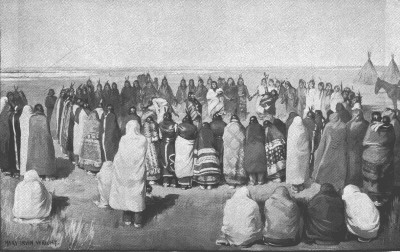
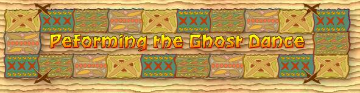
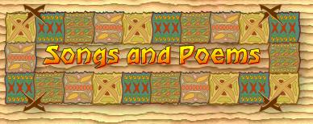

|
|  |
| With most Indians tribes on reservations because of the Indian movement, hunger, disease, and poverty started to destroy the Indians culture and will to survive. With all these terrible things eating away at the Indian culture, a Paiute named Wovoka (son of Tavibo, whose teachings helped start the Ghost Dance) had a vision that Christ would come again and was warned of the white man’s evils, which all happen during an eclipse of the sun. Walitawin, who was said to be the Virgin Mary, best described the purpose of the Ghost Dance when she said, ”The is to belong solely to his (Christ) chosen people, and this continent is to be extended much further west, taking a part of the great sunset water. The eastern part of the continent will be abandoned, all but in the western part where of herds of buffalo will wander as in days long ago, and with the disappearance of all the Indians who now sleep, and forever more they wander over the earth with no one to say: ‘Do this or I will put you in the guard house’”, which is similar to all other theories of the recreation of earth in the religion of the Ghost Dance. |
| After several months of its creation, the Ghost Dance had spread through the Indians and their tribes like a wild fire. From just the Paiute tribe, it jumped to the Sioux, Arapaho, Iroquois, Utes, Bannocks, and the Shoshone within, practically, a blink of an eye. Short Bull, Kicking Bear, And Good Thunder were just a few chiefs of the Ghost Dance religion, called this by the white man because of the religions purpose to resurrect an reunite with the dead. |
| With the number of Ghost Dance followers increasing at an alarming rate, the government, fearing an uprising in the Indians, went out stop the Ghost Dance in its tracks (about this time, chief Si Tanka and a band of Mineconjou Sioux started to get into the Ghost Dance). Late in the year 1890, the government, thinking Sitting Bull was the heart of the Ghost Dance, sent officers to arrest him. Only a few months after starting to follow the Ghost Dance, Sitting Bull, who already knew he was going to be taken away, was surrounded while asleep in his cabin and was told he was going to jail. Not wanting any trouble, he asked if his horse could be settled while he dressed. While Sitting Bull was dressing, a group of his followers, which was also into the Ghost Dance, gathered and out numbered the officers and they started to try to keep their leader from going to jail. While all the commotion was going on, a follower of Sitting Bull’s pulled out a rifle a shot at the officers. At end of the fight, Sitting Bull had been shot in the head twice and had died. |
| After the death of Sitting Bull, Chief Si Tanka (also
Known as Spotted Elk and Big Foot) and his followers started on his way to
complain to the government when he was join by about 80 Lakota Sioux right
before they past Wounded Knee. The government, thinking Chief Si Tanka was
hostile, sent soldiers to intercept them. The soldiers change up with Tanka
and told them to go to Wounded Knee. Tanka and his followers listened, and
where then in circled when they reached Wounded Knee. Tanka and his people
started to be unarmed, when all of a sudden, a blind Indian was started to
struggle to keep his rifle when it accidentally fired. The soldiers then open
fire with rifles and cannons upon the unarmed men, women, and children, killing
many innocence people at Wounded Knee Massacre. General E.D. Scott had this
to say about this massacre, ”There is nothing to conceal or apologize for
in the Wounded Knee Battle – beyond the killing of a wounded buck by a hysterical
recruit. The firing was begun by the Indians and continued until they stopped
- with the one exception noted above." Scott also stated," That the women
and children were casualties was un fortunate but unaviodable, and most must
have been killed by Indian bullets...The Indians at Wounded Knee brought
their own destruction as surely as any people ever did. Their attack on the
troops was as treacherous as any in the history of history of Indian warfare,
and that they were under astrange religious hallucination is only an explanation
notan excuse." |
| The Wounded Knee really marked the end of the Ghost
Dance religion in the 19th century, after the religion was made illegal. The
Ghost Dance was legalize but not for several years. |
|  |
| The Ghost Dance was a religion in which people would dance for what they believed in. According to James Mooney, who had witnessed, photographed, and written in detail what the dance was like, the Ghost Dance starts sometime around the afternoon or later, after sundown. If it begins early in the afternoon, they would break for supper. Plus, the painting and dressing before the dance usually takes about two hours. In his notes, he sent to the goverment, he desribed the dance in great detail. The following are two notes he sent: |
| "Sunday counted at on time 139 dancers, besides
outside spectators with 26 others inside the circle - some in a manic frenzy,
some is spasms and other treched out on the ground stiff and unconscious." |
| "Full Indian dress is worn, with buck skin paint,
and feather,... among the Sioux, the discard the belts ornamented with disks
of german silver, because the metal had come of the white man. Among the
southern tribes, on the contrary, hats are worn not considered in strict
accordance with the doctrine." |
|  |
| The following are a few songs which were sung while dancing and a poem about the Ghost Dance: |
The Father Comes Singing |
| There is the father coming, |
| There is the father coming. |
| The Father says this as he comes, |
| The Father says this as he comes. |
| "You shall live," he says as he comes, |
| "You shall live," he says as he comes. |
Peace and Truth Will Return |
| My son, let me grasp you hand, |
| My son, let me grasp you hand, |
| Says the Father, |
| Says the Father. |
| You shall live, |
| You shall live, |
| I bring you a pipe, |
| I bring you a pipe, |
| Says the Father, |
| says the Father. |
The Old Ways will Return |
| He makes me dance with arrows, |
| He makes me dance with arrows, |
| He calls the bow my father, |
| He calls the bow my father, |
| Grandmother, persevere, |
| Gandmother, persevere. |
| The Ghost Dance by Sondra Bell |
| We sing a song and dance on the meadow grass |
| We whistle like the wind through the meadow grass |
| It's a victory song |
| It's a song of love |
| The ghost comes down |
| from their homes above |
| Brown Buffalo join |
| with pure white dove |
| And dead rise up |
| when we dance of love |
| You can shoot your guns across the meadow grass |
| You can throw your bombs acrosss the meadow grass |
| Our ghosts keep dancing on the meadow grass |
| It's a victory song |
| It's a dance of love |
| The ghosts come down |
| from their homes above |
| Brown Buffalo join |
| with pure white dove |
| And dead rise up |
| when we dance of love |
| Rossville Jr. High T.J. McCullough Nov. 22, 2002 Bibliography |